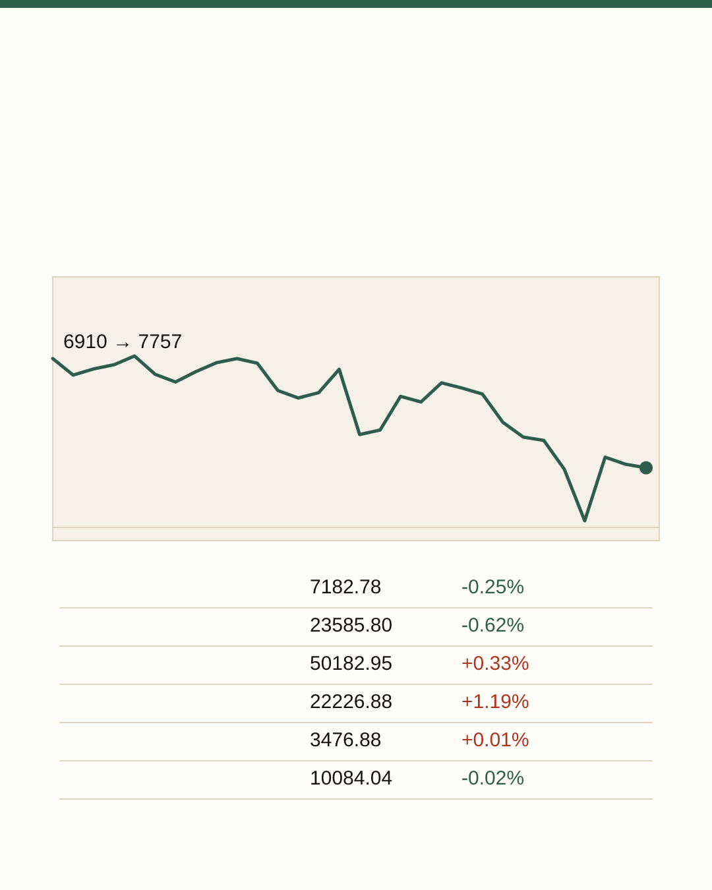

全球与中国金融

隔夜美股出现分化，标普500跌百分之零点二五，纳斯达克跌百分之零点六二，道琼斯反而涨百分之零点三三。更值得注意的是恐慌指数涨百分之七点三二，说明市场对波动的定价在抬升。港股恒生指数涨百分之一点一九，与美股走势相反。A股三大指数几乎原地踏步，上证涨百分之零点零一，深证跌百分之零点零二，创业板涨百分之零点二九。商品端黄金涨百分之零点八二、原油涨百分之一点五三，美元指数基本持平，比特币微涨百分之零点二一。
隔夜美股给出的信号并不统一。标普500收在7182.78点，跌百分之零点二五；纳斯达克收在23585.8点，跌百分之零点六二；道琼斯收在50182.95点，涨百分之零点三三。同一个晚上，三个指数两个跌一个涨，说明这不是全面撤退，更像是资金在板块之间换位置。科技股集中的纳斯达克跌幅更大，可能意味着前期涨得多的部分正在被兑现。
比指数涨跌更值得留意的是恐慌指数。恐慌指数收在28.29，单日涨百分之七点三二。这个指标可以理解成市场给未来波动开出的价码，涨得越多，说明愿意花钱买保险的人越多。指数只是小跌，保险价格却跳了一大截，这两件事放在一起，倾向于认为市场情绪比指数表面看起来更紧。
港股是当天最亮眼的一块。恒生指数收在22226.88点，涨百分之一点一九，和美股方向正好相反。这种背离可能来自区域资金的重新分配，也可能只是前期跌幅后的修复，具体原因输入里没有更多信息，还存在不确定性。
A股这边几乎是原地踏步。上证指数收在3476.88点，涨百分之零点零一；深证成指收在10084.04点，跌百分之零点零二；创业板指收在2189.82点，涨百分之零点二九。三个数字都贴在零轴附近，说明多空双方都没有发力。对普通人来说，这种日子手里的基金账面基本不会有大变化，更多是等待方向。
商品和汇率端的信息也值得摆在一起看。黄金期货收在3593.7，涨百分之零点八二；原油期货收在84.96，涨百分之一点五三；美元指数收在103.78，跌百分之零点零一，几乎没动。黄金和原油同时上涨，美元却没有走强，这组组合可能反映的是对通胀和地缘扰动的双重定价，而不是单纯的美元贬值交易。
比特币收在60564.7，涨百分之零点二一，幅度很小，说明加密市场当天没有走出独立行情。
新闻层面有几条线索可以对照。一条是四大商业银行已与上市公司签订股票回购增持贷款合同超6000亿元，这类资金属于偏中期的支撑力量，但落地节奏还需要观察。另一条是联合国贸发会议报告预计2026年全球海运贸易量零增长，这对航运和外贸相关链条是一个偏冷的背景。还有一条是光伏行业并购重整升温、产能出清进度待观察，说明部分制造业仍在消化过剩产能的过程中。
海外方面，有报道称韩国评估扩大股市稳定基金，欧洲央行新行长人选落定，美股期货在假期周尾段小幅走高。这些标题本身不构成方向判断，但拼在一起，大致能看出一个氛围：政策端在托底，市场端在犹豫。
对普通人的实际影响，可以分三层看。第一层是手里的基金，美股科技权重回落会直接体现在挂钩纳指的QDII净值上，港股相关产品当天则偏正面。第二层是利率和汇率，美元指数几乎不动，意味着人民币汇率的外部压力当天没有明显变化，房贷利率更多还是看国内自己的节奏。第三层是消费价格，原油上涨如果持续，可能慢慢传导到出行和物流成本，但一天的涨幅说明不了趋势。
需要提醒的是，恐慌指数跳升和指数小跌同时出现，这种组合历史上并不总是坏事，也不总是好事。它可能只是假期前后流动性变薄带来的放大效应，也可能是更大波动的前奏。在方向没有确认之前，把当天当成一个信号而不是一个结论，更稳妥。